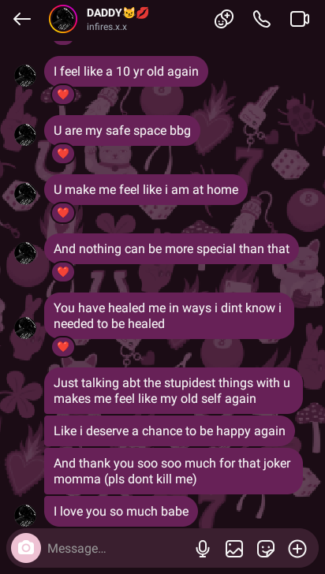
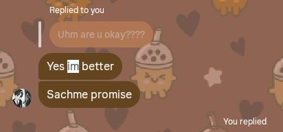

EXHIBIT A
EVIDENCE WITHHELD
BY INVESTIGATOR
BY INVESTIGATOR
Classification
Lost Archive
FILE STATUS
MISSING
Description
The earliest known interaction between investigator and subject could not be recovered.
Cause
Original account was deleted.
Recovery Attempt
Failed.
Investigator Note
Some evidence was never meant to survive. The memories did. Subject was always important to the investigator. The archive simply failed to preserve the beginning.
EXHIBIT B

Classification
Earliest Surviving Record
Description
Previous archives could not be recovered. This document remains the oldest surviving piece of evidence.
Investigator Note
Subject described the investigator as:
"a safe place"
"a home"
and someone who helped her find parts of herself she thought were gone.
"a safe place"
"a home"
and someone who helped her find parts of herself she thought were gone.
Archive Date
Approximately one year old.
Further analysis became unnecessary.
EXHIBIT C

Classification
Emotional Evidence
Description
Subject was observed checking on investigator multiple times.
Despite claiming to be okay herself, subject's first concern remained the investigator.
Investigator Note
Subject said:
"Sachme promise."
Investigator chose to believe her. Case remains open.
"Sachme promise."
Investigator chose to believe her. Case remains open.
EXHIBIT D
Classification
Protective Behavior
Description
Subject repeatedly attempted to confirm that investigator was actually okay.
Subject continued asking despite receiving multiple reassurances.
Investigator Note
Evidence suggests subject worries about people she loves more than she admits.
Further observation strongly recommended.
EXHIBIT E
Classification
Documented Silliness
Description
Subject participated in an extended discussion regarding which member of the family was actually pagaal.
Scientific findings remain inconclusive.
Investigator Note
The phrase:
"MUMMY KI BACCHI KI MUMMY PAGAL HAI"
has been archived for future generations.
"MUMMY KI BACCHI KI MUMMY PAGAL HAI"
has been archived for future generations.
EXHIBIT F
RESTRICTED
EVIDENCE
EVIDENCE
Classification
Protected Evidence
Description
The investigator has chosen not to submit this evidence.
Reason
The subject trusted the investigator.
That trust will not become an exhibit.
Evidence Summary
Recovered fact:
Subject cares more than she says. Investigator has known this for a long time.
Subject cares more than she says. Investigator has known this for a long time.